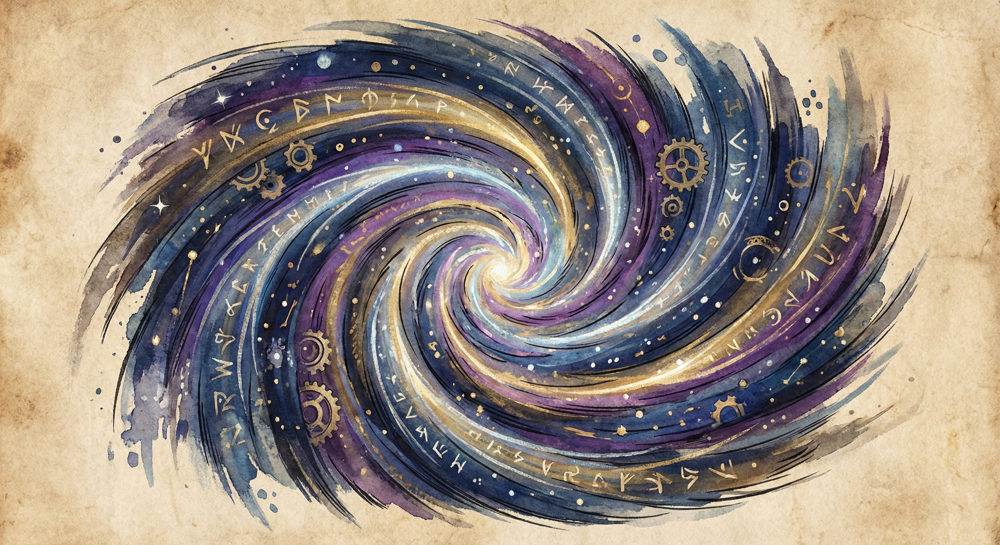
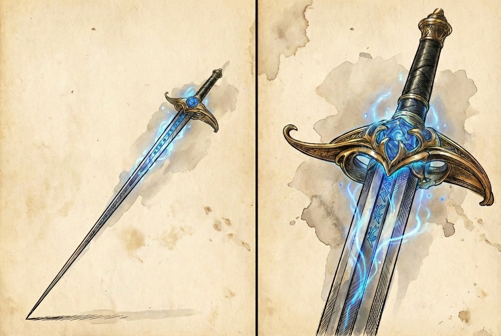
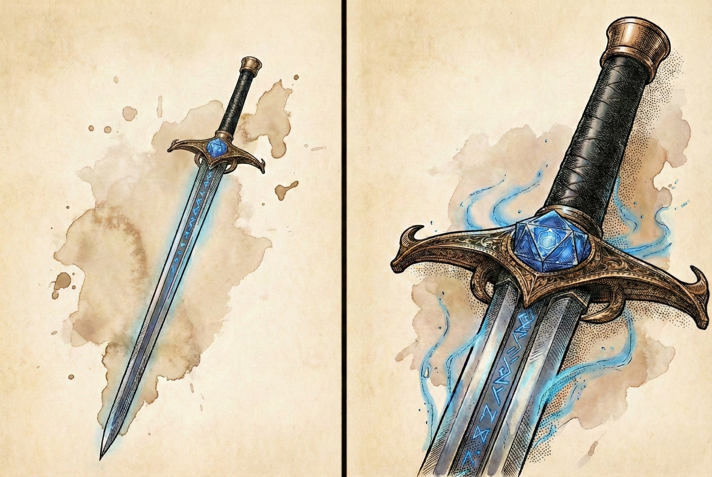
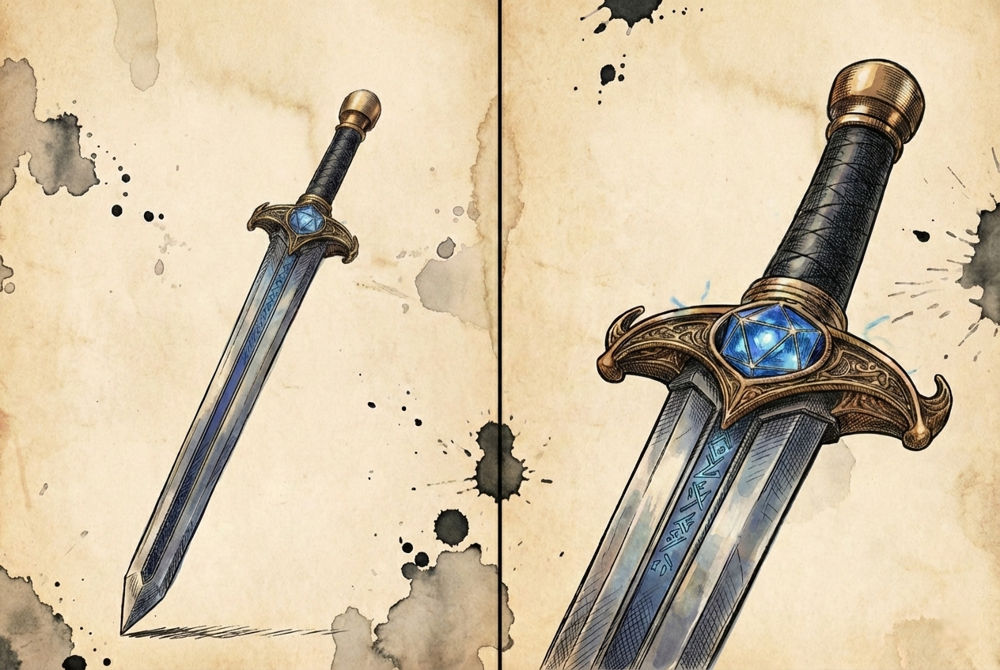
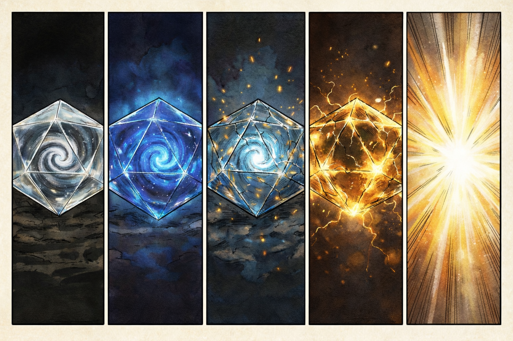
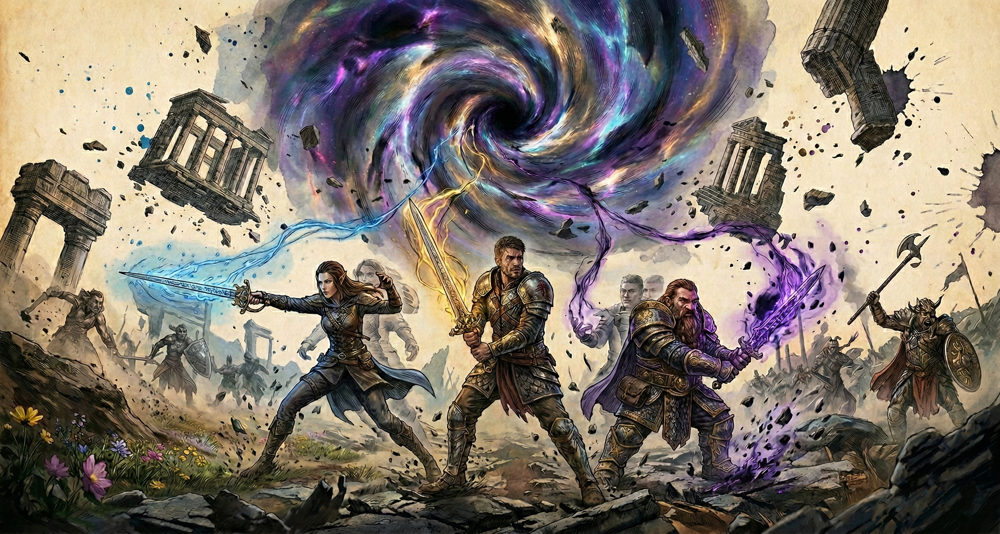
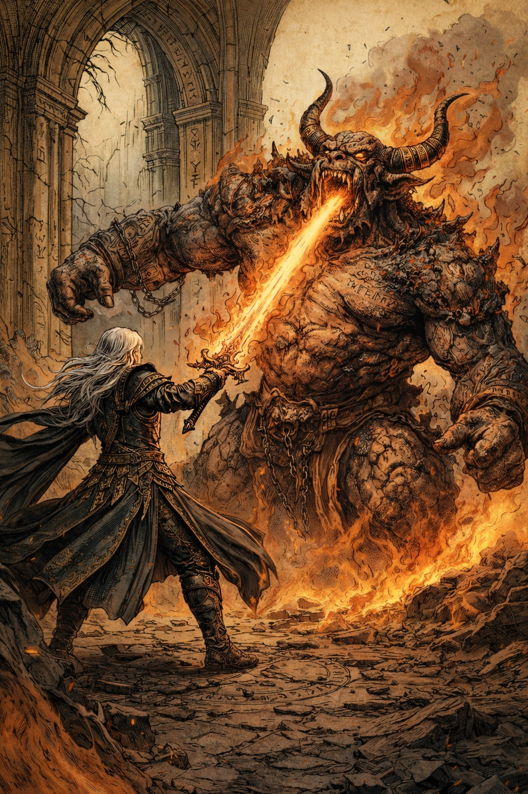
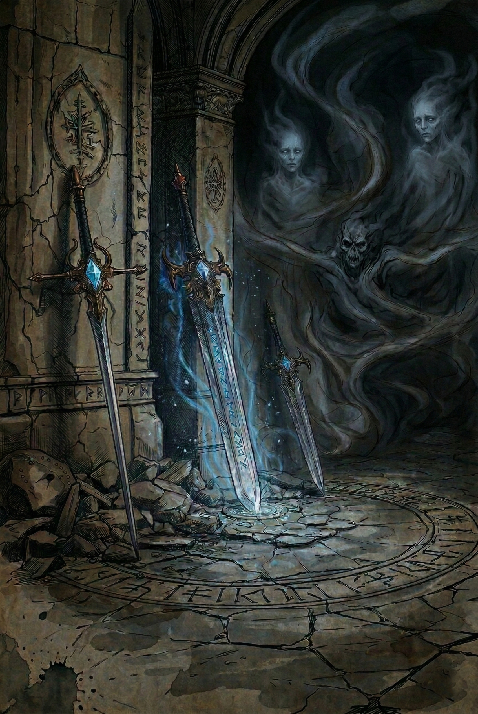
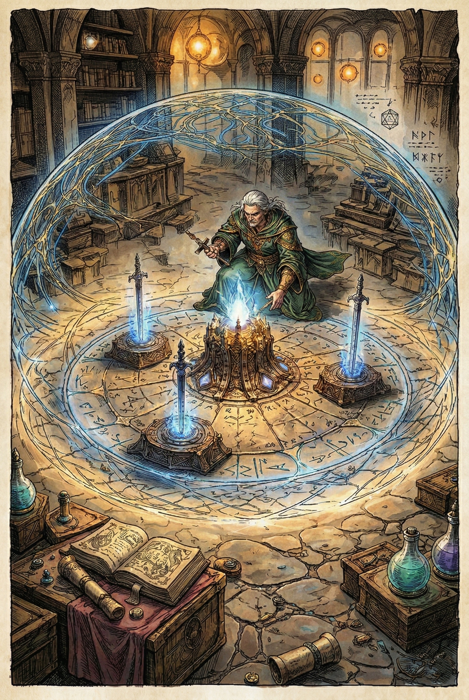

La Trilogía del Reloj
Prólogo
La cueva no parecía antigua.
El hielo cubría las paredes en capas gruesas y opacas, como si el invierno hubiera decidido quedarse allí para siempre. No había ruinas. No había altares. Solo una perturbación que el reino no podía ignorar.
El grupo avanzaba con cautela.
Balazar iba al frente, escudo firme, cada paso resonando con la seguridad de quien juró proteger.
Kurisu caminaba unos pasos detrás, murmurando palabras que no eran del todo suyas, energía oscura contenida en la palma de la mano.
Dante se deslizaba entre sombras y estalactitas, ligero, atento a cualquier grieta que pudiera volverse amenaza.
Séricar cerraba la marcha.
Sentía el desajuste.
No era frío. No era magia común.
Era algo más sutil. Como si el mundo respirara fuera de ritmo.
Entonces el hielo crujió.
No hubo advertencia.
No hubo tiempo para preparar estrategia.
El rugido descendió desde lo alto de la bóveda helada.
El dragón de escarcha cayó sobre ellos como una tormenta hecha carne.
El combate fue brutal.
El aliento glacial congeló el aire mismo.
Balazar resistió el primer impacto, pero sus rodillas tocaron el hielo bajo el peso del golpe.
Kurisu respondió con poder prestado, llamas oscuras que chisporrotearon contra escamas imposibles.
Dante encontró un flanco, rápido, preciso… pero el dragón era antiguo y despiadado.
Séricar levantó la mano.
Calculó.
Midió distancias.
Pensó un segundo más de lo necesario.
El hechizo salió.
Pero no en el momento perfecto.
Nunca en el momento perfecto.
Hubo gritos.
Hubo sangre.
Hubo un instante en que la derrota pareció inevitable.
Y aun así, vencieron.
No por coordinación impecable.
No por estrategia brillante.
Sino porque, en algún punto, el dragón cometió un error.
Un margen diminuto.
Un instante.
Cuando la bestia cayó, el silencio fue insoportable.
Salieron con vida.
Eso debía bastar.
Días después, en la quietud de su habitación, Séricar observaba un reloj.
El tic-tac era constante. Implacable.
Cerró los ojos y volvió a ver la caverna.
Balazar tambaleándose.
Kurisu sosteniendo un poder que podía consumirlo.
Dante arriesgando demasiado cerca de las fauces.
Si hubiera actuado antes.
Si hubiera anticipado mejor.
Si hubiera detenido aquel aliento un segundo más.
El reloj marcó otro segundo.
Y otro.
Sus ojos se fijaron en las manecillas.
No era deseo de poder.
No era ambición arcana.
Era responsabilidad.
Si pudiera empuñar el tiempo.
El reloj siguió avanzando.
Pero en ese instante, algo en Séricar dejó de hacerlo.
Y así comenzó todo.
Tipo: Legendario (cada espada Very Rare individualmente)
Requisito: Requiere sintonización
Creador: Séricar, mago cronurgo eladrin
╔════════════════════════════════════╗
║ NIVEL RECOMENDADO: 3-7 ║
╚════════════════════════════════════╝
PARTE I: EL ARMA
I. Naturaleza del Conjunto
Tres hojas forjadas para desafiar lo inevitable. No cortan carne, cortan destinos. Quien las empuña no combate contra enemigos, sino contra la inmutabilidad del tiempo mismo. Cada golpe reescribe la historia de un instante. Cada activación arrastra a todos hacia un futuro incierto.
Las Espadas Reloj son tres espadas con capacidades cronúrgicas, diseñadas para jugar con el tiempo y la probabilidad. No son armas independientes, sino fragmentos de un mismo mecanismo temporal. Cada activación altera un único flujo compartido, sin importar la distancia entre sus portadores.
El Remolino Temporal: Teoría del Mecanismo
En el corazón de cada espada, visible a través del cristal del núcleo, hay un remolino que parece drenar algo invisible. Los cronurgos que han estudiado estas armas describen la sensación como observar un desagüe tragando el hilo temporal mismo.
No son tres remolinos separados. Es uno solo.
Lo que se ve en los tres núcleos es el mismo fenómeno observado desde tres puntos de anclaje distintos. Cada espada es una ventana a la misma perturbación, un punto de contacto con una singularidad que existe en el tejido temporal subyacente, no en el espacio físico convencional.
Este remolino drena energía temporal del flujo natural de la realidad. Con cada uso, jala más fuerte. El tejido se tensa. La realidad se resiste. Eventualmente, cuando la tensión es demasiada, el universo intenta corregirse violentamente: el Vórtice Temporal.
El Vórtice no es un castigo. Es una ley natural. Como una cuerda elástica que finalmente debe soltarse.
El remolino no existe "en" ningún lugar físico. Es una rasgadura en el tejido temporal mismo, una abertura permanente en la estructura subyacente de la realidad. Los núcleos de cristal simplemente lo hacen visible, como ventanas que permiten observar algo que normalmente sería imperceptible.

Crear este remolino fue el núcleo del proceso de forja. Durante la Infusión Temporal (Fase 3), la magia cronúrgica no solo imbuye las espadas: perfora deliberadamente el tejido temporal para abrir un punto de acceso directo a su energía. El remolino es la FUENTE de poder de las espadas. De ahí drenan su capacidad de manipular el tiempo.
Las tres espadas son los anclajes que mantienen la abertura estable. Sin ellas, el remolino colapsaría... o la rasgadura se expandiría sin control. Fueron diseñadas para canalizar el flujo de energía de manera controlada.
Lo único cierto: mientras las tres espadas existan, el remolino permanecerá abierto. Destruirlas podría cerrar la fuente... o liberar lo que está siendo contenido.
Regla Fundamental
Las tres espadas comparten un único contador global de Cargas de Entropía. La distancia o barreras físicas no interrumpen este vínculo.
Propiedades Base
- Cada espada es Very Rare de forma individual.
- Cada espada requiere sintonización individual.
- Cualquier criatura puede sintonizarse con las espadas.
- Si las tres están sintonizadas por el mismo portador, el conjunto se considera Legendario y activa el sistema completo de Entropía.
- +1 a tiradas de ataque y daño.
- Cuentan como armas mágicas.
- Cualquier criatura puede empuñar las espadas. Sin sintonización, funcionan como armas mágicas +1. Para activar sus habilidades especiales, al menos un portador debe estar sintonizado. Los efectos se calculan usando las estadísticas del portador sintonizado.
- No infligen daño elemental adicional.
II. Habilidades Individuales de las Espadas

Segundero (Rapier)
La más delgada de las tres. Su filo vibra con urgencia, acelerando los latidos del corazón de quien la empuña. Los aliados se mueven al compás de su ritmo frenético.
Acción adicional: Al impactar, un aliado a 30 ft puede usar su Reacción para realizar un ataque o mover hasta la mitad de su velocidad sin provocar ataques de oportunidad. Este movimiento es adicional y no consume su movimiento normal del turno.
Restricción: Una vez por criatura por combate.
Costo: +1 Carga de Entropía.

Minutero (Espada Versátil)
Equilibrada y versátil, esta hoja recupera lo perdido. Su acero refleja no el presente, sino posibilidades todavía no gastadas.
Acción: Elige una de las siguientes opciones para un aliado a 30 ft:
- Recuperar un slot de hechizo gastado de nivel 1 a 3 (solo lanzadores de conjuros).
- Convertir un slot de hechizo disponible al siguiente nivel superior: 1→2, 2→3, o 3→4. El slot original se consume (solo lanzadores de conjuros).
- Recuperar una habilidad de descanso corto ya utilizada.
Restricción: Una vez por criatura por combate.
Costo: +1 Carga de Entropía.

Hora (Espada Corta)
La más pesada, la más silenciosa. Cuando señala a alguien, el destino titubea. Las decisiones se bifurcan, obligadas a elegir de nuevo.
Reacción: Cuando una criatura que puedas ver a 30 ft realiza una tirada de ataque, habilidad o salvación, puedes forzar que repita la tirada. Debe usar el nuevo resultado. Debe declararse inmediatamente después de la tirada y antes de que se determinen sus efectos.
Restricción: Una vez por criatura por combate.
Costo: +1 Carga de Entropía.
III. Sistema Global de Entropía
Con cada uso tiras del hilo temporal. Con cada uso, el tejido se tensa. Eventualmente, algo debe romperse.

Los cinco estados del Núcleo: Normal (0-4) • Sobrecarga (5-7) • Forzado (8-9) • Vórtice (10)
Definición: Activación Mayor
Se considera Activación Mayor cualquier uso de una habilidad especial descrita en este documento que incremente las Cargas de Entropía. Ataques normales, golpes críticos o daño convencional no constituyen una Activación Mayor.
Mecánica del Sistema
Cada Activación Mayor incrementa las Cargas de Entropía.
Estados del Sistema:
- Estado Normal (0–4 cargas): No se realiza tirada de Vórtice.
- Estado Sobrecarga (5–7 cargas): Tras cada Activación Mayor, tira 1d6. Con 4–6 se activa el Vórtice.
- Estado Forzado (8–9 cargas): Tras cada Activación Mayor, tira 1d6. Con 3–6 se activa el Vórtice.
- 10 cargas: El Vórtice se activa automáticamente (doble tirada en la tabla).
El Vórtice se resuelve inmediatamente tras activarse. Luego, las Cargas vuelven a 0.
Sincronía (Pasiva)
El Núcleo refleja con absoluta precisión el estado del flujo temporal. Los portadores conocen siempre la cantidad exacta de Cargas acumuladas mediante cambios en brillo y vibración.
Reinicio de Cargas
Las Cargas solo se reinician si las tres espadas permanecen 1 minuto completo sin que ninguno de sus portadores participe en combate.
Participación incluye estar bajo iniciativa activa, ser objetivo de acciones hostiles o actuar dentro de un enfrentamiento.
Impulso Temporal
Cuando un arma de la trilogía cruza un umbral crítico de entropía, el caos temporal otorga un breve impulso de poder al portador antes de estabilizarse en su nuevo estado.
Efecto: Durante el turno en que las Cargas de Entropía cruzan de un estado a otro, el arma otorga un bonificador temporal mejorado.
Umbrales de Activación:
- 4 → 5 Cargas (Normal → Sobrecarga): El arma otorga +2 al ataque y daño hasta el final de ese turno (reemplazando el +1 base del arma).
- 7 → 8 Cargas (Sobrecarga → Forzado): El arma otorga +2 al ataque y daño hasta el final de ese turno (reemplazando el +1 base del arma).
IMPORTANTE:
- El impulso solo se activa al cruzar estos umbrales específicos, no durante el estado completo.
- Solo se activa al ascender de estado, no al descender o resetear cargas.
- El bonificador +2 reemplaza el +1 base; el arma nunca otorga +3.
- Este efecto se aplica solo al turno en que se cruza el umbral.
- No afecta aumentos de cargas dentro del mismo estado (ej: 5→6 o 8→9).
IV. Poder Legendario: Activación del Conjunto Completo
Cuando las tres espadas están sintonizadas (sin importar por cuántos portadores), el Núcleo del Reloj puede configurarse para resonar en una Frecuencia específica al finalizar un Descanso Largo.
Cualquier portador sintonizado puede reconfigurar la frecuencia durante su descanso. Si múltiples portadores descansan en momentos distintos, la frecuencia queda configurada por el último portador que finalizó su descanso.
Menú de Sintonización: Frecuencias del Núcleo
Requiere las tres espadas sintonizadas. Al finalizar un Descanso Largo, cualquier portador sintonizado puede elegir una Frecuencia. Solo una frecuencia puede estar activa a la vez.
1. Entropía Cero (Ofensiva)
La detención perfecta. El objetivo queda atrapado en un instante sin fin, incapaz de avanzar mientras el resto del mundo sigue adelante.
Acción: Una criatura a 30 ft realiza salvación de CON.
CD = 8 + bonificador de competencia + modificador de INT del sintonizador.
Fallo: Queda Incapacitada y su velocidad se reduce a la mitad hasta el inicio de tu próximo turno.
Éxito: Queda Ralentizada (como el hechizo Lentitud) hasta el final de tu próximo turno.
Restricción: Una vez por criatura por combate.
Costo: +2 Cargas.
2. Perpetuidad (Defensiva)
Un segundo robado a la muerte misma. El portador puede anclar un alma al borde del abismo y devolverla contra su voluntad.
Reacción: Cuando una criatura a 30 ft caiga a 0 PG, queda en 1 PG en su lugar.
Restricción: Una vez por criatura por combate.
Costo: +3 Cargas.
3. Confluencia (Soporte)
Las líneas temporales se entrelazan. Los portadores dejan de ser individuos y se convierten en un único mecanismo sincronizado.
Acción: Vincula a los portadores durante la ronda actual (40 ft).
Cada portador puede usar su Reacción para donar su siguiente Acción o todo su Movimiento base a otra criatura (aliada o no) a 40 ft.
La criatura que recibe la Acción o Movimiento la obtiene en su próximo turno. El portador que dona pierde ese recurso en su turno.
La habilidad finaliza cuando todos los portadores han decidido ceder o no su recurso.
Límite: Una criatura no puede realizar más de dos Acciones en un mismo turno mediante este efecto.
Costo: +2 Cargas.
V. Vórtice Temporal

El tiempo se pliega sobre sí mismo, negándose a permitir que el presente avance. La realidad se retuerce. Nadie es inmune a las consecuencias.
Tira 1d20 y resuelve inmediatamente. Afecta a todas las criaturas presentes.
Nota: "Final de la ronda" significa hasta que la iniciativa vuelva al portador que activó el Vórtice.
Tabla de Efectos (1d20)
| d20 | Efecto |
|---|---|
| 1 | Todas las criaturas ganan +10 ft de movimiento hasta el final de su próximo turno. |
| 2 | Todas las velocidades se reducen a 0 hasta el final de la ronda. |
| 3 | La iniciativa se reordena aleatoriamente de forma inmediata. Determina nuevo orden y continúa desde ahí. |
| 4 | Todas las criaturas repiten su última Acción de la ronda actual si es posible (deben tener los recursos necesarios). Criaturas que aún no han actuado no se ven afectadas. |
| 5 | Nadie puede usar Reacciones hasta el inicio del siguiente turno del portador. |
| 6 | Todas las criaturas pueden mover 15 ft sin provocar ataques de oportunidad inmediatamente. |
| 7 | Todas las condiciones activas duran una ronda adicional. |
| 8 | Todas las condiciones activas terminan inmediatamente. |
| 9 | Cada criatura afectada por una condición que requiera salvación debe repetirla inmediatamente. |
| 10 | Una criatura aleatoria pierde su próximo turno. Si aún no ha actuado en esta ronda, pierde este turno. Si ya actuó, pierde el turno de la siguiente ronda. |
| 11 | Una criatura aleatoria actúa inmediatamente (turno extra ahora). Si ya actuó en esta ronda, actúa de nuevo. |
| 12 | Todo el daño infligido hasta el final de la ronda se convierte en daño de fuerza. |
| 13 | Todas las tiradas de ataque hasta el final de la ronda se realizan con ventaja. |
| 14 | Todas las tiradas de ataque hasta el final de la ronda se realizan con desventaja. |
| 15 | Todas las criaturas intercambian posición con la más cercana. Si no hay criatura cercana, no se mueve. |
| 16 | Las armas infligen daño mínimo hasta el final de la ronda. |
| 17 | Las armas infligen daño máximo hasta el final de la ronda. |
| 18 | El tiempo se comprime: cada criatura pierde su Acción adicional si tiene alguna (Action Surge, Haste, etc.). |
| 19 | Cada criatura puede usar inmediatamente su Reacción si no la ha usado en esta ronda. |
| 20 | Se tiran dos resultados adicionales en la tabla e ignora este resultado. |
VI. Notas Finales
Ventaja del Creador

Cuando ocurre un Vórtice Temporal, Séricar (o el creador de las armas) puede volver a tirar el resultado del d20 una vez si considera que el efecto le perjudica. Debe usar el nuevo resultado.
Notas para el DM
La Trilogía del Reloj es un sistema de riesgo consciente.
El Vórtice es imparcial por diseño. Ajusta probabilidades si el ritmo de tu mesa lo requiere.
Hoja de Seguimiento para Jugadores
Fotocopia esta página para rastrear las Cargas de Entropía durante el combate
Cargas de Entropía
No hay tirada de Vórtice
1d6: 4-6 = Vórtice
1d6: 3-6 = Vórtice
¡Vórtice automático! (tira 2d20)
Frecuencia del Núcleo Activa:
Habilidades Usadas Este Combate:
Cada habilidad solo puede usarse una vez por criatura por combate. Anota el nombre de la criatura afectada.
⚠️ Imperfecciones del Arma:
Si tu arma tiene imperfecciones de la forja, anótalas aquí. Recuerda aplicar estos efectos durante el combate.
Las Cargas vuelven a 0 tras un Vórtice, o tras 1 minuto sin que ningún portador participe en combate.
PARTE II: LA FORJA
Este documento detalla los requisitos para que un artífice o forjador pueda crear las tres espadas temporales y el Núcleo del Reloj desde cero.
I. Conocimiento Requerido
Teoría Temporal Básica
- Comprensión de los flujos temporales y su manipulación
- Estudio de paradojas temporales y sus consecuencias
- Conocimiento de entropía temporal como concepto mágico
- Páginas de investigación: Al menos 200 horas de estudio (8-10 sesiones de downtime)
Fuentes de Conocimiento Posibles
- Tomos antiguos de cronurgos legendarios
- Ruinas de civilizaciones que experimentaron con el tiempo
- Mentor experto en magia temporal (puede ser un NPC, un lich, un dragón de bronce, etc.)
- Visiones proféticas o contacto con entidades del Plano del Tiempo
- Fragmentos de espadas temporales previas para estudiar
Habilidades Mágicas
- Dominio de conjuros de 5to nivel o superior
- Conocimiento del conjuro "Haste" (necesario como base teórica)
- Idealmente: acceso a conjuros como "Time Stop", "Slow", "Temporal Shunt"
- Competencia en Arcana y capacidad de lanzar conjuros de 5º nivel o superior.
II. Materiales Base
Metales Especiales (para las hojas)
1. Mitral Temporal
- Mitral refinado expuesto durante años a anomalías temporales
- Cantidad: 3 lingotes (uno por espada)
- Ubicación sugerida: Minas en zonas de distorsión temporal, ruinas de batallas donde Time Stop fue usado repetidamente, meteoritos que atravesaron portales planares
2. Adamantina Etérea
- Adamantina del Plano Etéreo, más ligera pero igualmente resistente
- Cantidad: 1 lingote (para reforzar el centro del Núcleo)
- Ubicación sugerida: Comerciantes planares, expedición al Plano Etéreo, tesoro de dragón antiguo
Gema del Núcleo
3. Cristal Horológico
- Una gema cristalina grande, extremadamente rara
- Debe ser transparente y sin imperfecciones
- Debe resonar con energía temporal (detectable con Detect Magic)
- Será tallada en forma de icosaedro (d20) durante la Fase 1 de forja
- Tipos posibles:
- Diamante temporal (formado en zona de anomalía temporal)
- Fragmento cristalizado del Plano del Tiempo
- Lágrima petrificada de un Fénix (criatura que renace = dominio temporal)
- Valor estimado: 50,000+ po
NOTA: La forma de d20 es una tradición cronúrgica, simbolizando las múltiples líneas temporales posibles (20 resultados, 20 futuros). Algunos forjadores usan otras formas geométricas, pero el icosaedro es considerado el más estable para contener paradojas temporales. Es una decisión estética y simbólica, no un requisito mecánico absoluto.
⚠️ ADVERTENCIA PARA EL DM: Este cristal, una vez infundido con energía temporal durante la forja, se convierte en un núcleo temporal inestable. Su naturaleza paradójica hace que sea irreconocible como objeto vendible para comerciantes comunes. Ningún tasador convencional puede evaluar su valor, y los mercaderes de objetos mágicos lo consideran "demasiado peligroso" o "incomprensible". Aunque técnicamente vale más de 50,000 po en componentes, su venta es narrativamente imposible sin atraer atención extremadamente peligrosa (Inevitables, cronurgos hostiles, o peor).
Componentes Alquímicos
4. Polvo de Reloj de Arena Ancestral
- Arena de un desierto donde el tiempo fluye diferente
- Usada para templar las hojas
- Cantidad: 1 frasco (100 gramos)
5. Aceite de Cronoesencia
- Extraído de seres que viven fuera del tiempo normal
- Ejemplos: Androsphinx, ciertos tipos de genios, criaturas del Astral
- Usado para lubricar las runas durante la inscripción
- Cantidad: 3 frascos (uno por espada)
III. Componentes Temporales (Los Más Difíciles)
Estos son los elementos "épicos" que requieren aventuras completas:
1. Fragmento de Paradoja Estable
Descripción: Un objeto que existe simultáneamente en dos estados temporales
Cómo obtenerlo:
- Crear una paradoja controlada (ej: usar Time Stop mientras otra criatura usa Time Stop)
- Buscar en ruinas donde experimentos temporales fallaron
- Negociar con un cronurgo renegado
Uso: Se integra en el Núcleo para permitir la manipulación temporal
Peligro: Alta probabilidad de causar anomalías si se maneja mal
2. Aliento de un Momento Congelado
Descripción: Tiempo literalmente detenido, embotellado en un contenedor mágico
Cómo obtenerlo:
- Lanzar Time Stop y capturar la esencia del momento con un ritual
- Explorar la "Cámara Eterna" (zona donde un Time Stop nunca terminó)
- Robar de un cronurgo que colecciona "momentos"
Uso: Permite a las espadas "pausar" efectos temporales
Cantidad: 3 viales (uno por espada)
3. Lágrima de Quien Ha Vivido Dos Veces [OPCIONAL]
Descripción: Lágrima de una criatura que ha experimentado viaje temporal real
Cómo obtenerlo:
- Encontrar un NPC que viajó al pasado/futuro
- Un replicante o clon que coexiste con su original
- Un druida anciano que vivió dos veces su vida (reencarnación)
Nota: Debe ser dada voluntariamente (una lágrima robada no funciona)
Uso OPCIONAL - Soul-Binding (Vinculación de Propiedad)
Si se añade la Lágrima durante la Fase 3, las espadas quedan "soul-bound" al forjador:
Mecánicas de Soul-Binding:
- Las espadas son PROPIEDAD del forjador (otros pueden usarlas normalmente)
- No pueden ser vendidas, regaladas, heredadas o transferidas permanentemente sin la muerte del dueño
- NO hay restricción de distancia: las espadas funcionan a cualquier distancia del dueño
- Si las espadas están separadas del dueño por más de 1 semana (7 días), se teletransportan automáticamente de vuelta a él
- El vínculo solo se rompe con la muerte permanente del dueño
- Si el dueño muere, las espadas pueden vincularse a un nuevo portador mediante un ritual de 24 horas (requiere Arcana DC 18 y una nueva lágrima)
Ventajas del Soul-Binding:
- Seguridad: No pueden ser robadas permanentemente
- Retorno automático después de 1 semana sin importar la distancia
- Conexión emocional profunda con las espadas
Desventajas:
- No puedes venderlas o regalarlas permanentemente
- Dependen de tu supervivencia (si mueres sin resurrección, necesitan nuevo dueño para recuperar sus funciones mágicas)
- Si las prestas por >1 semana, regresan a ti automáticamente
NOTA IMPORTANTE: Las espadas pueden ser USADAS por cualquier persona, tengan o no soul-binding. El vínculo solo afecta la PROPIEDAD (quién es el dueño), no la usabilidad. Puedes prestar las espadas a aliados y funcionarán normalmente. La diferencia está en que con soul-binding regresan automáticamente después de 1 semana.
Si NO usas la Lágrima: Las espadas funcionan normalmente pero sin soul-binding (pueden ser transferidas libremente, no regresan automáticamente)
⚡ ATAJO ALTERNATIVO: CONFLUENCIA DEL FORJADOR ⚡
Si llegas al Día 6 sin el Fragmento de Paradoja y/o sin las Lágrimas, puedes arriesgar el siguiente método durante la Fase 3:
Método Estándar:
- Durante el ritual de infusión (cuando lanzas Haste), la intensidad temporal es tan alta que permite abrir portales para traer versiones de ti mismo de diferentes líneas temporales (pasado/presente/futuro)
- Las 3 versiones coexisten durante toda la Fase 3 de forja (Día 6)
- Su coexistencia crea una paradoja estable (Fragmento de Paradoja)
- Cada versión puede proporcionar una lágrima (3 Lágrimas totales)
Requisitos:
- Salvación de Arcana o Sabiduría DC 15 por cada portal
- Riesgo: Si falla, podrás reintentar UNA ÚNICA VEZ abrir el portal
- Si vuelve a fallar: Las versiones temporales se desincronizazan y el forjador puede sufrir daño temporal permanente (envejecimiento, pérdida de memoria, etc.)
- Deberás tomar un descanso largo antes de reintentar la Infusión Temporal
Método Avanzado (solo magos nivel 17+):
- Si lanzas Time Stop + Haste sobre ti mismo durante la Fase 3, la intensidad de la magia temporal es aún mayor
- Las versiones de otras líneas temporales vienen a ti POR SÍ SOLAS
- NO requiere salvación (éxito automático)
- Costo: Slot de nivel 9 (Time Stop) + slot de nivel 3 (Haste)
- Consecuencia: Deberás descansar 3 DÍAS completos antes de continuar a la Fase 4
- El forjador queda exhausto por el trauma de existir en múltiples momentos simultáneos
Beneficio de ambos métodos:
- 1 Fragmento de Paradoja (tres yos = paradoja estable)
- 3 Lágrimas (cada versión llora al verse a sí misma)
- Reduce 4-6 sesiones de obtención de componentes
- Mantiene el secreto (no necesitas NPCs externos)
Consulta con tu DM si este método está disponible en tu campaña.
IV. Herramientas y Condiciones de Forja
Forja Especial
No puede ser una forja ordinaria
Opciones:
- Forja de un maestro enano/dragón/gigante que trabaje materiales legendarios
- Forja construida en un nexo temporal (donde 3+ líneas temporales se cruzan)
- Forja alimentada por fuego de un Fénix o dragón de bronce (conexión temporal)
- Cámara sellada donde el tiempo puede ser manipulado artificialmente
Herramientas
- Martillo de Forja Magistral (+3 o superior)
- Yunque de Adamantina
- Moldes especiales para cada espada (deben ser tallados con precisión)
- Set de herramientas de grabador de runas (para inscribir símbolos temporales)
Condiciones Ambientales
- Temperatura: Debe fluctuar entre frío extremo y calor extremo (representando ciclos)
- Tiempo: La forja debe durar exactamente 7 días (número mágico de ciclos temporales)
- Asistentes: Al menos 2 ayudantes con conocimiento en Arcana 15+
- Protección: Círculo mágico contra anomalías temporales
V. Proceso de Forja (Sistema Graduado)
FILOSOFÍA DE DISEÑO: Este sistema reemplaza los fallos catastróficos con consecuencias graduadas y manejables. Los errores crean imperfecciones reparables, no la pérdida total de materiales o tiempo. El objetivo es mantener la tensión sin frustrar a los jugadores.
FASE 1: Preparación del Núcleo (Día 1-2)
Tallar el Cristal Horológico en forma de icosaedro y sellarlo con el Fragmento de Paradoja.
- Tallar el Cristal Horológico en forma de icosaedro (d20)
- Infundir el Fragmento de Paradoja en el centro de la gema
- Sellar con Adamantina Etérea para crear la carcasa externa
- Ritual: Lanzar "Haste" + "Slow" simultáneamente sobre el Núcleo
- Salvación: Arcana DC 15 para estabilizar las energías opuestas
Resultado:
- Éxito: El núcleo se estabiliza correctamente. Continuar a Fase 2.
- Fallo: El núcleo se vuelve temporalmente inestable. El forjador debe esperar 8 horas para que se estabilice por sí solo. No se pierden materiales, solo tiempo.
FASE 2: Forja de las Hojas (Día 3-5)
Forjar cada espada requiere tres pruebas distintas que representan conocimiento arcano, habilidad artesanal y resistencia física.
Por cada espada, el forjador realiza 3 tiradas:
- Arcana DC 18 (conocimiento de runas temporales)
- Smith's Tools DC 15 (técnica de forja)
- Constitución DC 15 (resistir el calor extremo y las 72 horas de trabajo continuo)
Resultado según éxitos logrados:
- 3 éxitos: La espada se forja perfectamente. Sin imperfecciones.
- 2 éxitos: La espada funciona pero con una imperfección menor. Tirar 1d4 en la Tabla de Imperfecciones Menores (ver más adelante).
- 1 éxito: Igual que 2 éxitos, tirar 1d4 en la tabla de imperfecciones.
- 0 éxitos: La espada tiene una imperfección severa. El DM elige la más costosa de reparar de la Tabla de Imperfecciones Menores (no se tira d4).
IMPORTANTE: Independiente del resultado, la fase se completa y la forja continúa. Las imperfecciones pueden repararse posteriormente mediante Reforja Menor.
FASE 3: Infusión Temporal (Día 6)
⚠️ NOTA: Si no tienes el Fragmento de Paradoja y/o las Lágrimas, puedes usar el método "Confluencia del Forjador" descrito en la Sección III (Componente #3). Este método permite obtener ambos componentes durante esta fase, pero tiene riesgos y costos.
Sincronizar las tres espadas con el Núcleo del Reloj mediante infusión de energía temporal.
- Colocar cada espada en contacto con el Núcleo
- Verter un Aliento de un Momento Congelado en cada hoja
- [OPCIONAL] Añadir la Lágrima de Quien Ha Vivido Dos Veces (debe caer naturalmente sobre la hoja). Si se usa, las espadas quedan soul-bound al forjador (ver Sección III, Componente #3). Si NO se usa, las espadas funcionan normalmente sin restricciones de propiedad o distancia.
- Ritual: Lanzar ritual de 8 horas: "Haste" + "Enhance Ability" + "Magic Weapon" combinados
- Salvación: Arcana DC 18 (puede usar Inspiration o ayuda de asistentes)
Resultado:
- 20 natural: ¡Perfección absoluta! Si alguna espada tiene una imperfección menor de la Fase 2, el forjador puede eliminar una de ellas (a su elección).
- 16-19: Éxito completo. Las espadas se sincronizan perfectamente con el Núcleo.
- 11-15: Sincronización lograda, pero con defecto en el sistema de impulso. El impulso temporal (buff al cruzar estados Normal→Sobrecarga y Sobrecarga→Forzado) otorga +2 solo al ataque; el bonificador al daño permanece en +1. Costo de reparación: 800 po.
- 10 o menos: Igual que 11-15, además el arma comienza cada combate con 1 Carga de Entropía ya acumulada (este defecto debe anotarse en la hoja de personaje del portador). Costo de reparación: 1,000 po.
⚠️ TRACKING IMPORTANTE: Si un arma tiene el defecto "empieza con 1 carga", el jugador debe anotarlo claramente en su hoja de personaje junto al nombre del arma. El DM debe recordar este inicio modificado al comienzo de cada combate hasta que la imperfección sea reparada.
FASE 4: Calibración Final (Día 7)
Realizar el primer Vórtice controlado para verificar que el sistema completo funciona correctamente.
- Activar cada espada una vez en presencia del Núcleo
- Observar cómo el Núcleo responde a cada uso
- Ajustar la resonancia mediante pequeños golpes de martillo en las runas
- Realizar el "Primer Vórtice Controlado" (disparar 10 Cargas intencionalmente en área segura)
- Salvación: Arcana DC 16
Resultado:
- Éxito: ¡Las espadas están completas! El conjunto funciona perfectamente (con las imperfecciones previas, si las hay).
- Fallo: Las espadas quedan temporalmente desincronizadas. Se debe repetir solo esta fase (Día 7) desde el principio. No se pierden materiales ni se generan imperfecciones adicionales.
V-A. Tabla de Imperfecciones Menores
Estas imperfecciones surgen durante la Fase 2 de forja cuando el proceso no es perfecto. Pueden acumularse con defectos de Fase 3.
Tirar 1d4 cuando se obtienen 1-2 éxitos en Fase 2:
| d4 | Imperfección | Efecto en Combate | Costo Reparación |
|---|---|---|---|
| 1 | Eco Residual | La primera vez en cada combate que activas Sobrecarga o Forzado, recibes 1d4 de daño de fuerza. | 500 po |
| 2 | Desfase Breve | Cuando activas Sobrecarga o Forzado, tu velocidad se reduce en 10 pies hasta el final de tu turno. | 750 po |
| 3 | Resonancia Inestable | El impulso temporal +2 solo aplica en estado Forzado, no en Sobrecarga. | 1,000 po |
| 4 | Sin Fallo | No hay imperfección. La espada funciona normalmente. | — |
⚠️ IMPERFECCIONES ACUMULATIVAS
Un arma puede acumular múltiples imperfecciones provenientes de diferentes fases del proceso de forja. Los efectos de cada imperfección se aplican simultáneamente durante el combate.
Ejemplo: Si SEGUNDERO tiene "Eco Residual" (Fase 2) y "impulso solo al ataque" (Fase 3), sufrirá 1d4 de daño al entrar en Sobrecarga/Forzado Y el impulso temporal solo otorgará +2 al ataque (no al daño).
Costos acumulativos: El costo total de reparación es la suma de todas las imperfecciones presentes en el arma. En el ejemplo anterior: 500 po + 800 po = 1,300 po.
V-B. Reforja Menor (Reparación de Imperfecciones)
Un herrero con conocimiento arcano puede reparar las imperfecciones menores sin deshacer el arma completa. Este proceso es más accesible que la forja original.
Requisitos:
- Tiempo: 1 día de trabajo por imperfección
- Costo: El oro indicado en la tabla de la imperfección (para materiales especializados)
- Habilidad: Competencia en Arcana o Smith's Tools
- Tirada: Arcana o Smith's Tools DC 14
Resultado:
- Éxito (14+): La imperfección se elimina permanentemente. El arma funciona como si nunca hubiera tenido ese defecto.
- Fallo (13 o menos): No se logra reparar, pero el arma no empeora. El forjador puede intentarlo nuevamente otro día (pagando materiales de nuevo).
- 20 natural: ¡Trabajo magistral! Se eliminan 2 imperfecciones menores si el arma tiene varias (a elección del forjador). Solo se paga el costo de una.
NOTA PARA EL DM: La reforja puede convertirse en una side quest. Tal vez el oro necesario está en manos de un mercader corrupto, o los materiales solo se encuentran en una zona peligrosa. Usa esto como gancho narrativo en lugar de solo restar oro.
VI. Riesgos y Consecuencias
Durante la Forja
Anomalías temporales pueden manifestarse:
- Eco temporal del forjador aparece y habla mensajes crípticos
- Objetos cercanos envejecen o rejuvenecen aleatoriamente
- Bucles temporales de 5-10 minutos (los jugadores repiten acciones)
Atraer atención no deseada:
- Inevitables investigan la perturbación temporal
- Cronurgos rivales intentan robar el proceso
- Criaturas del Plano del Tiempo se filtran a través de grietas
Después de la Creación
El forjador puede sufir "Resonancia Temporal":
- Ve destellos de eventos futuros (1-2 días adelante)
- Sueña con momentos de su pasado con claridad perfecta
- Envejece 1d4 años o rejuvenece 1d4 años (tira 1d2: 1=envejece, 2=rejuvenece)
VII. Notas para el DM
Escalabilidad
- Para partido de nivel 8-12: Elimina los componentes más exóticos (Fragmento de Paradoja puede ser una gema encantada común), reduce DCs en 2-3 puntos
- Para partido de nivel 13-16: Usa el documento tal como está
- Para partido de nivel 17-20: Aumenta DCs en 2 puntos, añade combate contra Inevitables durante la forja
Tiempo de Campaña
- Investigación inicial: 3-5 sesiones
- Obtención de materiales base: 2-4 sesiones
- Obtención de componentes temporales: 4-8 sesiones (1-2 por componente épico)
- Construcción de la forja/negociación: 1-2 sesiones
- Forja final: 1 sesión épica (puede ser downtime con tiradas críticas)
TOTAL ESTIMADO: 11-20 sesiones de juego
Alternativas Narrativas
- Séricar puede encontrar UNA espada ya hecha y usarla como "plantilla" para las otras dos
- Un mentor puede hacer el 50% del trabajo, dejando a Séricar hacer la parte crítica
- Las espadas pueden crearse una a la vez (Segundero primero, más simple)
VIII. Plot Hooks para Iniciar el Arco
Hook 1: El Manuscrito Olvidado
Un mercader de libros raros ofrece a Séricar un tomo polvoriento: "Cronosíntesis: Forjando lo Imposible". El libro está escrito en un lenguaje antiguo y describe la teoría de infundir metal con tiempo destilado. La última página muestra un boceto de tres espadas conectadas a una gema central. El autor del libro: un cronurgo legendario llamado "El Tejedor de Instantes", desaparecido hace 200 años.
Hook 2: Visión Durante Descanso Largo
Durante una meditación o sueño, Séricar tiene una visión: se ve a sí mismo empuñando tres espadas brillantes, congelando a un enemigo en el tiempo. Una voz susurra: "Lo que aún no existe, existe ya en el hilo del mañana. Forja tu destino, cronurgo". Al despertar, Séricar encuentra un fragmento de metal desconocido en su bolsillo: Mitral Temporal, del tamaño de una moneda. No estaba ahí antes.
Hook 3: Encargo de un Mentor Misterioso
Un mago anciano contacta a Séricar con un encargo: "Necesito que forjes tres espadas capaces de manipular el tiempo. Yo proporcionaré el conocimiento y parte de los materiales... pero tú debes hacer el trabajo. Es tu destino, aunque aún no lo sepas". El mago puede ser una versión FUTURA de Séricar, un dragón de bronce disfrazado, o un genuino mentor interesado en ver si Séricar tiene el talento.
Hook 4: Fragmento Encontrado en Dungeon
Durante una aventura no relacionada, el party encuentra una espada rota y corroída en un cofre antiguo. Cuando Séricar la toca, siente un pulso de energía temporal. Un Identify revela: "Fragmento de Segundero, Espada del Instante - Rota hace 300 años en un Vórtice Temporal catastrófico". Hay suficiente material intacto para estudiar su construcción... y quizás replicarla.
APÉNDICE: Primeros Experimentos de Séricar
Antes de crear la Trilogía del Reloj en su forma final, Séricar experimentó con múltiples variantes, buscando diferentes enfoques para manipular el tiempo. Estos prototipos fallidos revelaron verdades importantes sobre la cronurgia: no todo poder es útil, y la elegancia de un diseño reside en su eficiencia, no en su intensidad.
Los siguientes experimentos fueron abandonados por razones específicas, pero sus lecciones moldearon la versión definitiva de las espadas. Se documentan aquí como advertencia.
I. La Forja Carmesí (Variante Ígnea)

Concepto
En su primer intento, Séricar buscaba poder desmesurado. Razonó que si el fuego eterno nunca se extingue, entonces existe fuera del tiempo lineal. Infundió en los núcleos cristalinos esencias de elementales de fuego y fragmentos de Plano Elemental del Fuego, creyendo que esto amplificaría exponencialmente la energía temporal disponible.
Resultado
Las espadas funcionaron. De hecho, fueron devastadoramente poderosas: cada golpe dejaba estelas de fuego temporal que persistían segundos después del ataque, los enemigos no solo eran ralentizados sino incinerados mientras estaban congelados en el tiempo. El vórtice temporal que generaban era visible a kilómetros de distancia, una columna carmesí de realidad distorsionada.
Consecuencias Mecánicas
Ventaja: +2d6 de daño de fuego adicional en cada ataque. Enemigos ralentizados también sufren 1d6 de daño de fuego al inicio de cada uno de sus turnos.
Desventaja crítica: El fuego eterno drena constantemente el hilo temporal. Luego del primer uso las espadas consumen 1 Carga de Entropía por turno automáticamente, incluso sin usarse. Al llegar a 10 Cargas, el Vórtice se activa involuntariamente.
Problema adicional: Apagar el fuego temporal requiere:
- Manipulación elemental opuesta (hielo o vacío térmico)
- Desaceleración del flujo temporal (e.g: Slow)
Redirigir la energía ígnea a otro objetivo solo transfiere el problema.
Veredicto de Séricar
"Poder sin control es un arma que te mata a ti primero. Las espadas ardían con la furia de un sol moribundo, pero yo no podía soltarlas sin consecuencias, ni guardarlas sin que la forja entera se incendiara. El tiempo no debe ser quemado; debe ser tejido con precisión. Los prototipos carmesíes fueron desanclados antes de que destruyeran algo que amara."
Nota para el DM
Estas espadas son una opción para campañas de nivel 15+ donde el riesgo extremo es parte de la diversión. Funcionan mejor en escenarios de "todo o nada" (batallas finales, misiones suicidas). Su drenaje constante acelera la llegada del Vórtice.
No es un arma estratégica. Es una llama sostenida sobre pólvora.
II. La Resonancia del Umbral (Variante Necromántica)

Concepto
Después del fracaso ígneo, Séricar adoptó un enfoque más cerebral. Razonó que la muerte y el tiempo están entrelazados: los muertos existen fuera del flujo temporal, eternos en su estado final. Si pudiera anclar esencias de seres no-vivos (espectros, fragmentos de almas, ecos de memoria) en los núcleos, las espadas podrían consultar el pasado directamente, revelando información estratégica: trampas olvidadas, eventos históricos, incluso atisbos de futuros posibles vistos por quienes ya partieron.
Infundió en las espadas: polvo de hueso de lichs, fragmentos de gemas de necromancia, y lágrimas de espectros voluntarios.
Resultado
Las espadas funcionaron como "oráculo táctico". Al activarlas en una mazmorra o campo de batalla, Séricar podía escuchar susurros: advertencias de exploradores muertos, lamentos de víctimas antiguas, ecos de conversaciones entre enemigos hace décadas. En teoría, esto era ventaja estratégica pura.
Consecuencias Mecánicas
Ventaja: 3 veces al día, el portador puede usar una acción para "escuchar el umbral". Tira 1d20:
- 15-20: Recibes información útil sobre el área (ubicación de trampas, presencia de enemigos, un secreto histórico relevante).
- 8-14: Recibes información ambigua o parcial (el DM da una pista críptica).
- 1-7: Contacto con entidad hostil o eco perturbador (ver desventaja).
Desventaja crítica: Los ecos y/o visiones no siempre vienen cuando los llamas. A veces llegan sin ser invocados. Cada descanso largo, el DM tira 1d6 en secreto:
- 1-2: El portador escucha un eco traumático ligado al lugar donde duerme (gritos de batalla, últimas palabras de un asesinado, lamentos de hambruna). Salvación de Sabiduría DC 15 o sufre 1 nivel de exhaustion por falta de sueño.
- 3-4: Interferencia: durante el siguiente combate, debe hacer salvación de Concentración DC 12 al inicio de su turno o quedar stunned hasta el final de su turno (sobrecarga de voces).
- 5-6: Sin incidente.
Problema adicional: Las entidades contactadas no siempre cooperan. Algunas son vengativas, otras confundidas, varias violentas. En un 10% de los usos, una entidad intenta poseer al portador (Salvación de Carisma DC 16 o quedar poseído por 1 minuto).
Veredicto de Séricar
"La información es poder, pero la locura es su precio. Las espadas me mostraron secretos que ningún vivo debería conocer... y también me mostraron horrores que no pedí ver. Escuchar a los muertos es como abrir una puerta que no puedes cerrar: eventualmente, algo cruza en la dirección equivocada. Las sellé en una bóveda protegida por runas de silencio. Si alguna vez las encuentras, no digas que no te advertí."
Nota para el DM
Estas espadas son ideales para campañas con tono oscuro o de horror. Ofrecen ventaja táctica real, pero con un costo psicológico constante. Funcionan mejor con jugadores que disfrutan el roleplay de personajes atormentados o que llevan cargas emocionales. No recomendadas para campañas heroicas estándar, a menos que quieras introducir un arco de "arma maldita" que el party deba purificar o destruir.
Conclusión: El Camino Hacia la Perfección
Después de estos experimentos, Séricar comprendió la lección fundamental de la cronurgia como ingeniería:
"Las espadas temporales no deben ser armas de destrucción masiva. Deben ser herramientas precisas que otorguen control, no caos. El tiempo es un recurso, y como todo recurso, debe ser administrado con inteligencia, no desperdiciado en espectáculos de poder."
Y así, la Trilogía del Reloj se encaminó a su forma final: sin fuego eterno que drenara la energía, sin ecos que enloquecieran al portador. Solo tiempo puro, tejido con precisión, estable y eficiente.
"El tiempo no perdona a quienes juegan con él sin respeto. El tiempo no castiga. Corrige. Si lo entiendes… eres cronurgo."
— Séricar, Maestro Cronurgo, en sus notas personales destruidas (y reconstruidas por él mismo desde una línea temporal alternativa, porque por supuesto que lo hizo)
Cronosfera: Ritual de Desanclaje Controlado

La Cronosfera no es un hechizo de detención temporal. Es un procedimiento de desacoplamiento progresivo del flujo.
Desarrollada por Séricar tras sus primeros experimentos fallidos, la Cronosfera permite cerrar una rasgadura temporal sin provocar una corrección violenta del tejido del mundo.
No destruye el remolino. Elimina el diferencial que lo mantiene abierto.
Fundamento Teórico
El remolino existe mientras haya drenaje.
Incluso en estado estable, las espadas mantienen un micro-flujo constante de energía temporal que impide que la rasgadura cicatrice.
La Cronosfera crea una región donde el flujo temporal se desacelera de forma gradual y controlada. Dentro de la esfera:
- El drenaje disminuye progresivamente.
- La vibración del Núcleo se atenúa.
- El diferencial energético tiende a cero.
Cuando el drenaje se vuelve imposible, el remolino pierde su punto de anclaje y comienza a cerrarse por sí mismo.
El tejido no es forzado. Se le permite recomponerse.
Procedimiento
Requisitos:
- Las tres espadas.
- Conocimiento profundo de cronurgia (Arcana 20+ o equivalente).
- Concentración ininterrumpida.
- Un espacio libre de interferencias mágicas mayores.
Duración: Entre 1 hora y 8 horas, a discreción del DM, según la estabilidad del remolino.
Fases del Ritual
Fase I — Estabilización
La Cronosfera se manifiesta como una cúpula translúcida de distorsión leve. El tiempo dentro comienza a desacelerarse imperceptiblemente.
Las espadas vibran con mayor intensidad durante los primeros minutos.
Fase II — Atenuación
El flujo disminuye de forma perceptible. El brillo del Núcleo se apaga gradualmente. Las Cargas de Entropía no pueden incrementarse. El drenaje automático se reduce turno tras turno.
El lanzador debe mantener concentración. Cualquier interrupción puede provocar un Vórtice inmediato.
Fase III — Cierre
Cuando el drenaje alcanza cero:
- El remolino se estrecha.
- La singularidad pierde cohesión.
- La rasgadura cicatriza.
Las espadas conservan su estructura física y permanecen como armas mágicas +1, pero pierden permanentemente toda capacidad cronúrgica. No pueden reactivarse sin repetir un proceso completo de forja.
Riesgos
La Cronosfera no es infalible.
Si el ritual se interrumpe en Fase II o III:
- Se activa inmediatamente un Vórtice.
- El tejido puede sufrir una cicatriz residual.
- El lanzador debe realizar una salvación de Constitución o Sabiduría (CD determinada por el DM) o sufrir Resonancia Temporal: visiones fragmentadas del futuro o envejecimiento/rejuvenecimiento leve.
Cerrar una herida es más difícil que abrirla.
Consecuencias Cosmológicas
Un cierre exitoso no deja poder activo.
Sin embargo, el lugar donde se realizó el ritual puede presentar anomalías menores durante días o semanas:
- Ecos débiles.
- Alteraciones leves en la percepción del tiempo.
- Sensación persistente de presión invertida.
El tejido recuerda haber sido tensado.
FIN DEL DOCUMENTO